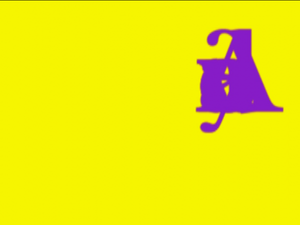

-
Bad Memory: Interview with Georgia Sagri
by Alex Kitnick April 27, 2011
Georgia Sagri, JustJust, 2007. Via the artist.
Alex Kitnick spoke with Georgia Sagri, whose work was featured recently in his show Massage, at Andrew Roth. Sagri’s solo show,Μοντέλο της Αντιγόνης opens tonight at Real Fine Arts.
Alex Kitnick: The first time we met I think you were working on a film, helping someone on a film, perhaps about George Maciunas. Is that right?Georgia Sagri: Yes, you are right. I was helping Jeffrey Perkins while I was staying at his place at Central Park West. When Jeffrey needs help I always help him.
AK: Is that still something that is happening? What is your interest in that material, Fluxus, and that time. Thinking about your involvement with music, I wonder if someone like Charlotte Moorman is interesting to you. And there is a lot of performance, too; Alison Knowles, Nam June Paik, Benjamin Patterson, who is also a musical person.
GS: My interest in Fluxus is in the mixing of art and life, composition, friendship, Maciunas’ ideas of cooperatives. The connection of action and language, poetry and the moments of coming together, cooking, fucking, laughing, queer as a form of engagement. Yes, I suppose the names and the individual practices are important but I am mostly in favor of the scores.
AK: Do you use scores in your work and performances?
GS: I guess because I grew up singing and playing all kinds of musical instruments, my background is in music, but I wouldn’t place the textual source of my performances only in the form of the musical score. It is a mixture of imaginaries: dance that never succeeds to be right, bad memory: memory is lost so there are subtitles and the challenge of composition. Rhythms are mixed with body tunings. I don’t think that performance is about the “now”; it is more about what and how a person arrives at a space in time and why anyone would be interested to observe and learn her/his/its story. I use live recordings, film effects, miming textures and movements only to underline that the act is already a document and it uses all kinds of mediums—gazes, the architecture, the location, the topology, the geography of the place where this subject will arrive. The body then becomes a four-dimensional image?
Georgia Sagri, The Summer Apartment/Logo, 2009. Via the artist.
AK: What is four dimensional?
GS: In Euclidian terms it is the space which has metric and norm, perceived also as direction. So, the body in that kind of four dimensional space is not only perceived from an exterior view point, it’s not only determined by exterior power structures but also by how it views itself, how to fight you own self-policing is very important here. So, in the performance we have moments of self-folding. The self of course differs each time depending on the construction and the purposes of each piece.
AK: Can you tell me about your project Saloon? Someone writes a score and you perform it? You make good posters for that. The name is good, too.
GS: Saloon is providing service for two works. I invite two artists and each of them gives one piece. That could be anything from a piece of paper with instructions to a structure, painting, fabric, sound. Then, according to the works I make a performance, most of the times in public. Sometimes we choose the location together with the artists and then I design the poster and send the invite which includes the poster via email. It is a kind of perverse curating.
Georgia Sagri, Video Bag (David Hammons Toy with Egypt and Libya), 2011. Via the Aritst
AK: When I get your e-mails I’m often not sure if the performances have happened already or are coming up.
GS: The past months I sent a series of meta-texts of the Saloon performances as Word documents which described the perspective of the performer while the piece was happening. Of course, the attempt wasn’t to describe the performance but to create another layer to the story or the space of Saloon and another textual element for it. Saloon then somehow could be a gathering of fantasies of operations.
AK: Once I went to see your brother talk at Bluestockings bookstore. He is very involved with anarchist politics in Greece. I know you are very aware of it and you are quite involved in a way. Is this something that you feel is squared or that you try to square with your art practice in any way?
GS: The only thing I can say about Athens is that every time you go out for a walk there is a protest. It’s impossible to not be politically involved.
AK: And does this reflect on your art practice in any way?
GS: I live in NY now and it is a very different set up. Here it is more about the politics of survival. Quite recently I realized that in NY I learn more of how to maintain a sense of togetherness with friends and colleagues and not to become a selfish vampire which is so easy in a metropolis like NY. I don’t have anxiety to prove that my work is political. My concern is how to live the life I want to without making compromises. Meaning that there are many social expectations, economical, political expectations that can force you to become something that you will not even have the option to regret. There is also oppression, lack of freedom, metropolitan anxiety, which leads to neurosis, brain paralysis, sadness, isolation. I try not to fall onto the trap of finding ways to brand the work, because there are so many problems to spend energy on this issue. It is so easy to be driven to work only for the money to pay the rent or work just because there is nothing else for you to do. I assume I prefer the concept of nonstop strike. It is more challenging to not become the secretary of yourself.
AK: That sounds like a good position. I’m not sure what else to say. It seems like a good position for this moment. I keep hear everyone talking about lateness, being bored, waiting for something to happen…
Georgia Sagri, The Summer Apartment , performance & video installation, On Stellar Rays Gallery, NY 2009. Via the artist.
GS: Bored about what? I have no interest of expecting something to happen. It is already happening and if it doesn’t I’ll make it happen. My work Are you ready? [a screensaver in which the letters in the phrase constantly de- and recompose] is not cynical in the way colonial westernized thinking understands cynicism. It is about training and processing. Tactical methods are based in training. The point here is not how to occupy the center during the event, there is no center to be occupied, but how in the moment of the event you won’t end up speaking someone else’s scripts or becoming the tool for another’s strategy. I am very concerned about how that can happen, it is a questioning. Also I am more interested of peripheral actions, the unexpected ones, the hidden when it is exploded, the unreasoning.
AK: Are you contradicting yourself a little there? You say you have no interest in something happening but you also seem to suggest there is an event to come. Perhaps there is something in your work that captures and reformulates the old saying, “There’s no time like the present” except that the present is a mix of temporalities.
GS: I think the event is not a specific special moment (καιρός) but the training for the event to come. That’s what I meant about textual ground. I am not interested in the heroic gesture of the performances of the 70s and I don’t sympathize with the construction of identity politics. I am navigating structural, linguistic, temporal forces that create subjectivities. Some of them are empty of history and memory, they just move around looking for their community. Others are presenting what they carry; letters, texts, behaviors, traumas, symptoms and they are spectators who effect by being effected. Just to be more clear I hate the word performance but we haven’t invented another term for us to use.

Georgia Sagri, Saloon, promo video, 2008. Via the artist.
AK: I heard you just performed at the Guggenheim in Bilbao. What did you do there?
GS: It was the making of a conversation between five different characters in a line. The process for the making of the characters was through a PowerPoint presentation, word documents projected, and live sound recording. The performance was the making of their dialogue, their postures, their gestures.
AK: There were five different people or you played five different characters? Was it in the Richard Serra sculpture?
GS: Yes, it was at the space of the permanent installation of Richard Serra. I tried to bring those five characters inside this huge space of echos and authoritarian structures. The piece didn’t have a moment of catharsis, there was not a single action, it was a presentation through repetition and by trying to do the characters and to make them talk to each other.
AK: Perhaps that is a good note to end on.
GS: Yes that’s fine with me.